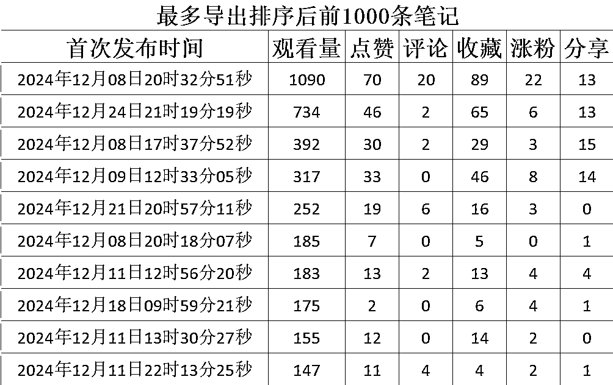
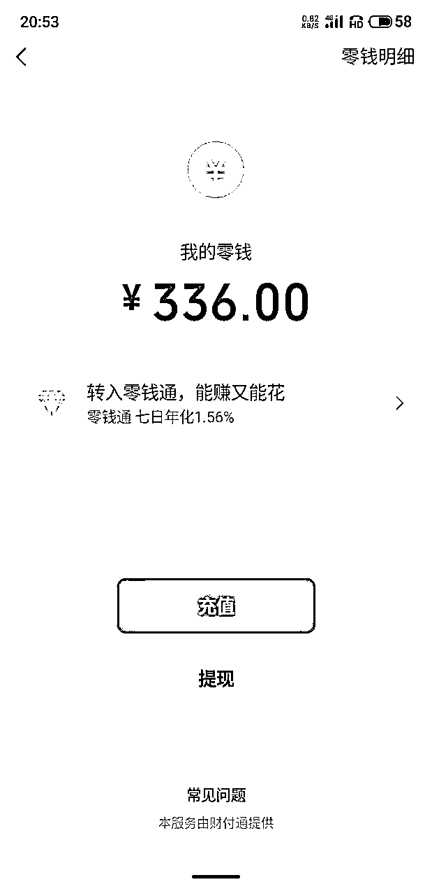

来源：https://lcnqe9bq2wgy.feishu.cn/docx/EYONdGC1XopDiexgpEcc4Q6tnkb
大家好，我是六只猫，11月加入生财有术，来自四川，原从事化工技术工作。今年因个人原因选择辞职，开启了全新的探索之旅。在本次航海选择了“小红书虚拟资料”项目，通过实操跑出了些许成绩（达成了300+的GMV），但是更多的是反思与成长。以下是我对于小红书虚拟资料项目的复盘，希望能给同样是新手的圈友带来一些启发。
10月，我第一次接触到生财小红书虚拟资料航海项目，没有养号基础的我怀着期待开干，从10月22日开始发布笔记，内容聚焦在小学虚拟资料赛道，后来又尝试了第二个账号。然而，实际结果却让我大受打击：
这个阶段的我常常陷入自我怀疑：我的笔记浏览量这么低，质量是不是不行？同行的内容为什么爆了，而我却无人问津？我是不是不具备爆款制作的能力？我真的适合这个项目吗？”
12月航海正式开始后，我向航海群里的教练求助，希平教练的一句话让我下定决心：“严重的付出收获不对等”，建议我注销账号重新开始。于是，我注销了旧账号，从零开始重新养号。尽管这一步让我感到难受，但正是这次“清零”，让我摆脱了过去的失败阴影，有了重新开始的机会。
目前我一共操作3个号，截止航海最后一天，一共发了143篇笔记，以下是我所有账号浏览量排名前十的的笔记数据，浏览量很一般，但是引流了27个人，完成交付12人，GMV 300+，完成了项目的0-1。


在一个项目开始的过程中，因为刚开始接触新的东西，潜意识会产生害怕的心理，害怕自己不行，害怕号有问题，害怕完成不了交付，害怕很多很细节的东西，这些害怕都是我的心里映照，但后来发现，所有问题都只能通过行动去解决：
完美的开始并不存在，行动才能让你找到根本的问题所在。
参加航海实战要起到作用，航海手册什么时候都可以学，为什么一定要实战呢？实战的价值在于它能帮助你快速纠偏和积累经验。
不要独自摸索，多向同行请教，学习别人的成功经验可以大大地缩短试错时间。
刚开始做小红书笔记时，我总是对每篇笔记都抱有很大地期待，发完后总是不断刷数据，想看看有多少人点赞、收藏，有没有人评论进群啊，但这些行为在没有自己期望的反馈时往往会变得焦虑。后来，我调整了心态：
不要拘泥于单篇笔记的表现，把更多精力放在量变和质变上。
期末阶段，家长对资料的需求大，心理着急，希望通过购买资料快速提升孩子的成绩。因此，笔记吸引过来的客户并不一定只需要展示的那一份资料。
引流后，如何与客户沟通直接决定了成交率。我在这方面总结了以下几点：
把沟通当作聊天，用解决需求的心态获得客户的信任，才能更高效地转化。
对标模仿我一开始并不喜欢，有点抗拒，感觉就是抄袭别人的东西，自己又不是不能做，然后我打脸了😓模仿是提升网感的捷径，通过学习他人成功的内容，快速积累经验，站在巨人的肩膀上能看得更远，通过模仿，逐渐培养自己的创作风格和判断力。
对标模仿是新手快速积累与成长的捷径，学会“借力”才能走得更快、更稳。
这次航海让我学会了怎么去更好地调整自己的心态，找到正确的方向。虽然目前还没有出爆款，但我相信坚持下去一定会有更多的收获。希望我的分享能为同为新手的你提供一些参考。
非常感谢生财平台，能够给我不断试错的机会，希望新的一年，自己仍然能够保持好奇心，保持学习力，坚持深耕，2025找到自己想要为之努力付出的方向～
最后，感谢这21天航海中所有教练、领队、志愿者和圈友的陪伴，相信我们走过的每一步都是在为自己所期待的未来添砖加瓦，祝大家一起生财有术！